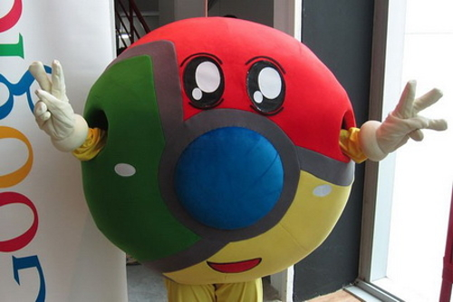
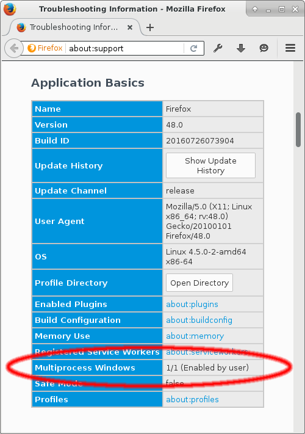

Stylish Super Skulk
The last time I talked about the web browser, I was technically speaking about Iceweasel. For the last decade, Linux users like me have known the default browser that Debian ships under the name of Iceweasel.
In 2006, due to some hysteria over trademark protection and typical West Coast America “we know better than you” attitude, Mozilla told Debian it could not use the name Firefox or the Firefox logo.
Can we even use it here? Well since we don’t want to be told off by Mozilla’s logo police, we can use images of some beautiful people who have made their own dramatic and artistic costume interpretations of the logo. This blog is 90% about cool and silly pictures after all.
After 10 years of Debian using the name Iceweasel and its own logo, eventually, Mozilla gave up and asked Debian to use the normal name and logo. Lets celebrate with another costume:

Thanks Iceweasel for your service, we will miss you. LWM published a longer discussion of this change. Incidentally, Google’s Browser is still called Chromium instead of Chrome on the Debian Linux platform. I could only find one Chrome costume:
He (or she) looks pretty happy.
Meanwhile, this week Firefox 48 has been released which, among other things, has caught up with a feature that Chromium has had for a while, namely multiple processes.
Making the browser render web content or play media in a subprocess is obviously a win for security and performance, especially on Liunx.
Processes are the main native form of efficient resource allocation on Linux, so now Firefox is using multiple processes it is finally working with the grain rather against it.
It is still early days. Nothing has crashed for me yet, but I am keeping the Firefox that Debian distributes (which at time of writing is version 45), around just in case. You might want to consider doing the same, especially if you are using extensions which may not work in the multiprocess mode yet.
To try it out, download Firefox. By the way in my last post about Firefox, I talked about how to run multiple Versions of Firefox and how to create an extra profile, which might be handy.
Firefox is pretty cautious about turning multiprocess mode on but putting about:status into the browser will tell you if it is on or off. As in the image below:
If you find it is off, you can make a new profile (as I just mentioned) or you can open about:config and toggle the setting called browser.tabs.remote.autostart to true. Then you can go back to about:status and see if it worked.
It still might be off because of whatever reason, i.e. they it might break an extension or whatever. If you want to push on anyway then you have to open about:config again and make a new boolean setting called browser.tabs.remote.force-enable and set that to true. Find more instructions here.
So well done to all the Mozilla developers and volunteers who wrote and shipped that. Just for you, another of those great Firefox costumes: